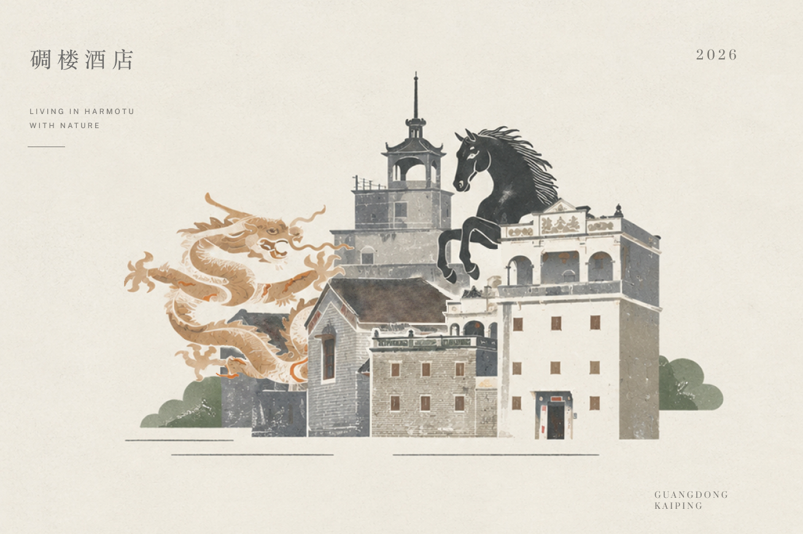
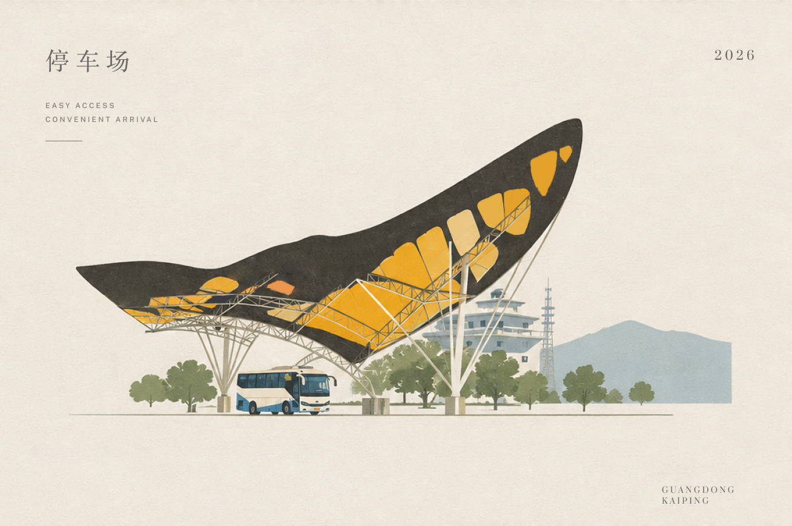
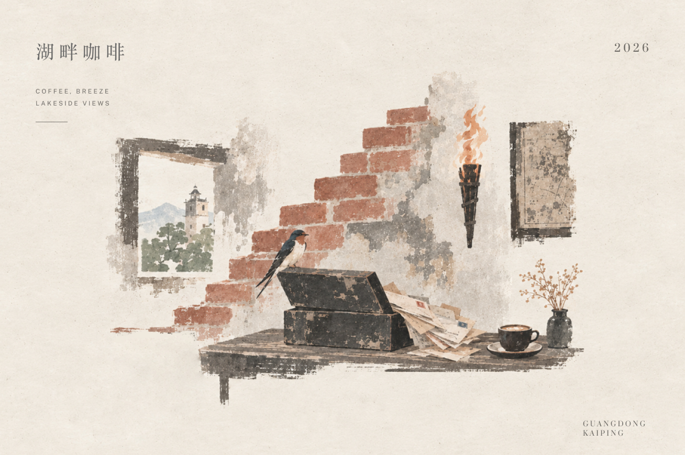
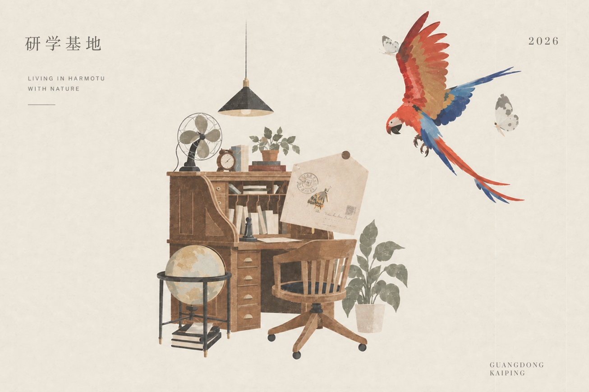
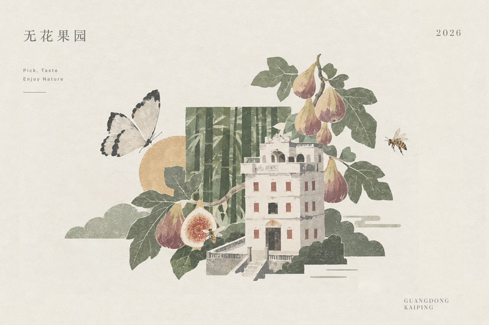
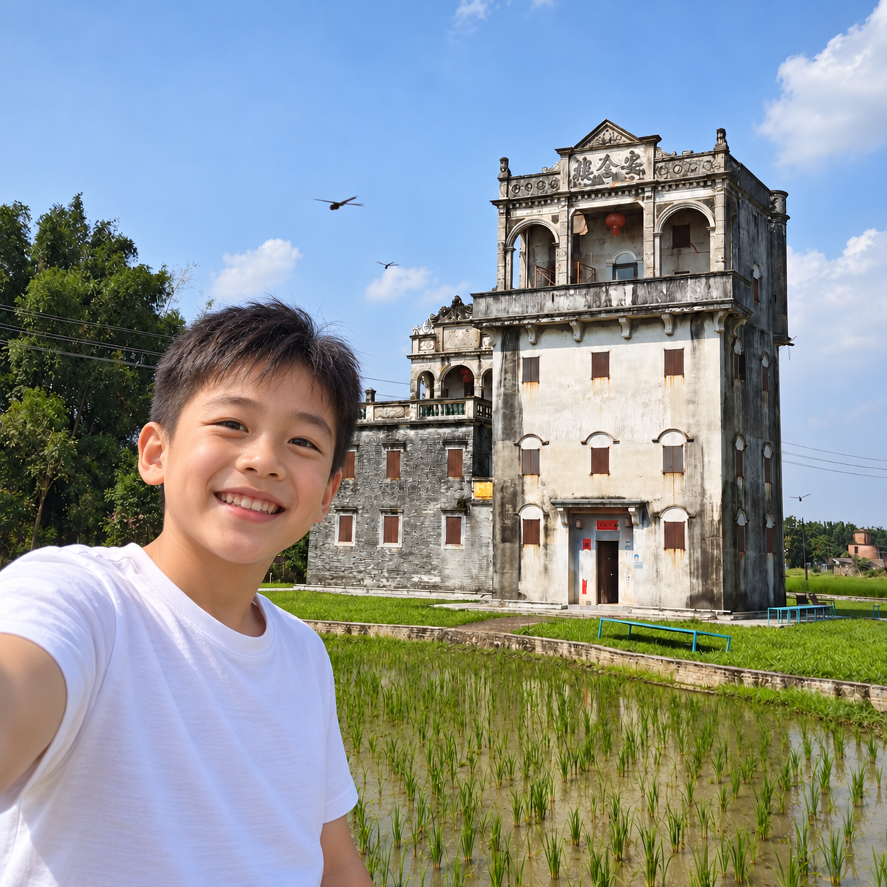
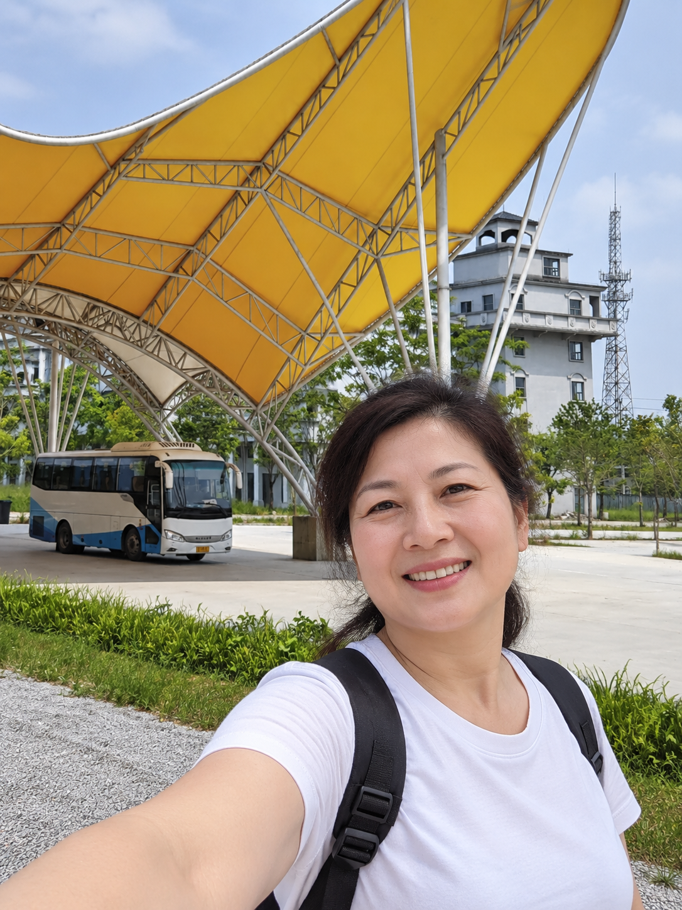
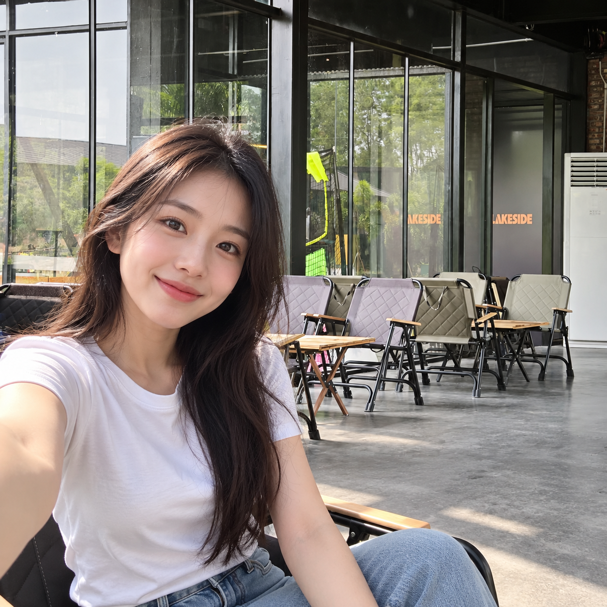
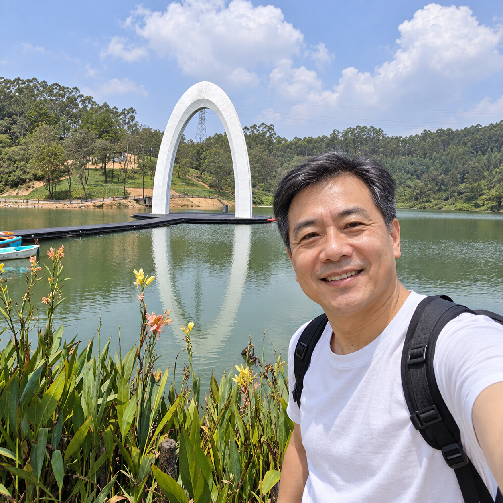
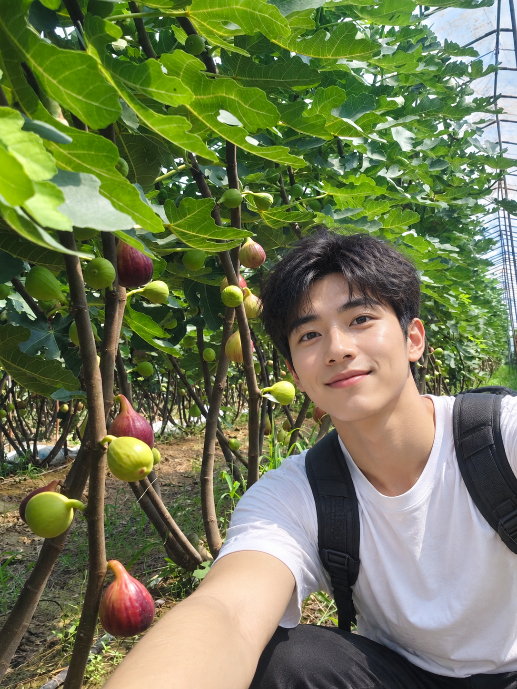

FIELD CONTENT
场地内容
湖泊、树林、蝴蝶、果园；碉楼建筑与侨乡记忆；咖啡休憩、动物研学与采摘活动。
KAIPING BUTTERFLY VALLEY · 2026
蝴蝶谷 AR 明信片打卡设计
一张明信片，连接山谷风物与侨乡记忆。沿地图探索六个点位，收集实体纪念，扫描图形观看 AR 故事。

02 / CONTEXT
蝴蝶谷汇集自然景观、侨乡建筑、农业采摘与研学活动，却缺少清晰的内容串联。《蝶归》以地图组织路线，以明信片承载纪念，以 AR 补充动态叙事。

FIELD CONTENT
湖泊、树林、蝴蝶、果园；碉楼建筑与侨乡记忆；咖啡休憩、动物研学与采摘活动。
USER ISSUE
点位缺少联系，游客以单点拍照为主；游览结束后缺少可带走的纪念。
DESIGN RESPONSE
地图负责引导，邮票与明信片建立收集目标，AR 呈现故事，游客照片推动分享。
03 / AR MOTION
保留建筑和主体稳定，通过树林摇曳、云层漂移与手绘笔触变化建立前后景深，模拟游客扫描物料后看到的动态场景。
AR 场景动态演示 / 点击播放
04 / JOURNEY
从线上入口到实体收集，再回到数字内容与社交分享。
打开项目入口
选择游览点位
识别场所地标
领取明信片
扫描指定图形
保存旅行记忆
05 / SIX PLACES
每个点位对应一张明信片、一枚识别图形与一段 AR 内容。

以侨乡建筑为核心，呈现碉楼的历史、迁徙与生活记忆。
HERITAGE STAY · COURTYARD CHARM
黄色蝴蝶形顶棚构成抵达园区后的第一处视觉地标。
EASY ACCESS · CONVENIENT ARRIVAL
连接湖景与休憩体验，展现园区舒缓、轻盈的一面。
COFFEE · BREEZE · LAKESIDE VIEWS
白色拱门与湖面倒影共同构成标志性的拍照场景。
ICONIC VIEW · PICTURE JOURNEY
通过蝴蝶、金刚鹦鹉与互动内容展开自然教育。
LIVING & GROWING WITH NATURE
结合植物知识、果实生长与季节性采摘体验。
PICK · TASTE · ENJOY NATURE06 / OUTCOMES
游客打卡图与动态演示共同说明项目在真实场景中的体验方式。





07 / TEAM
分工围绕体验、物料与展示展开，最终汇入统一的视觉系统。
梳理整体体验流程，负责 AR 图案设计与风格统一，完成体验视频的设计与规划。
体验流程 / AR 视觉 / 视频规划完成明信片与地图排版、网页部署，并参与部分 AR 图案的前期拼贴。
明信片 / 地图 / 网页部署参与项目想法提出与部分 AR 图案前期拼贴，负责 AR 图片生成、场景整理及小程序录入。
创意提出 / AR 图片 / 小程序录入